คู่มือการใช้งาน
วิธีใช้ Leonida Sub TH ทีละหัวข้อ ภาพทุกภาพมาจากหน้าจอโปรแกรมจริง (เวอร์ชัน 1.6.9) ตัวเลขในภาพตรงกับขั้นตอนใต้ภาพ
01ทำยังไงให้ซับขึ้น
หน้าหลักของโปรแกรมจะบอกเสมอว่าต้องทำอะไรต่อ ทำตามรายการทีละขั้นได้เลย
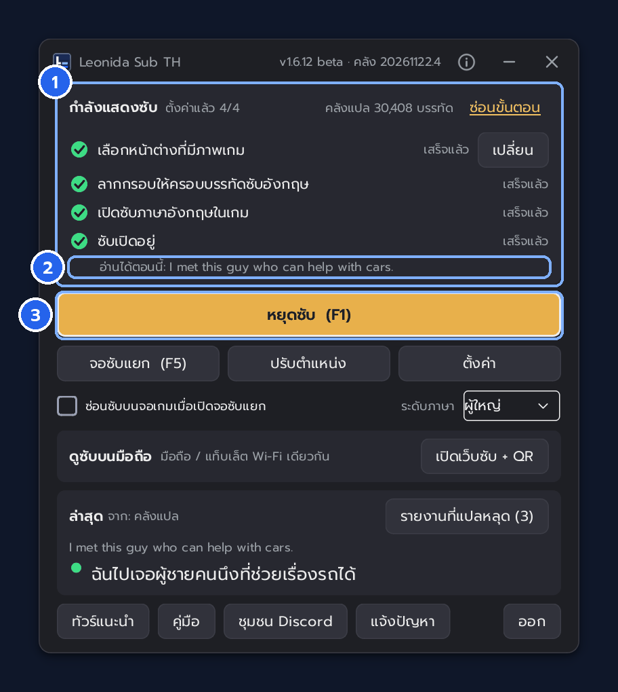
- 1รายการ 4 ขั้น — เลือกหน้าต่างที่มีภาพเกม, ลากกรอบให้ครอบบรรทัดซับอังกฤษ, เปิดซับภาษาอังกฤษในเกม และซับเปิดอยู่ โปรแกรมติ๊กให้เองเมื่อแต่ละขั้นเสร็จ เมื่อครบแล้วกล่องจะย่อเหลือบรรทัดเดียว (กด ดูขั้นตอน เพื่อเปิดดูอีกครั้ง)
- 2อ่านได้ตอนนี้ — ตัวหนังสือที่โปรแกรมอ่านได้ในกรอบ ถ้าไม่ใช่บรรทัดซับ ให้กด F2 แล้วลากกรอบใหม่
- 3ปุ่มใหญ่ — บอกสิ่งที่ต้องทำต่อ ยังไม่ได้ตั้งค่าจะเป็น เริ่มตั้งค่า: เลือกหน้าต่าง + กรอบซับ ตั้งค่าแล้วจะเป็น หยุดซับ / เปิดซับ (F1)
อย่าลืม
- เปิดซับภาษาอังกฤษในเกม: Settings → UI → Subtitles แล้วเล่นถึงฉากที่มีคนพูด
- มีหน้าต่างอื่นบังเกมได้ แต่อย่าย่อ (minimize) หน้าต่างเกม / OBS / Remote Play
02เลือกหน้าต่าง + ลากกรอบ
กด F2 (หรือปุ่มใหญ่ในหน้าหลัก) คลิกหน้าต่างที่มีภาพเกม เช่น OBS โปรแกรมของการ์ดแคปเจอร์ หรือ PS Remote Play แล้วลากกรอบให้ครอบบรรทัดซับอังกฤษพอดี ๆ ไม่ใหญ่หรือเล็กเกินไป
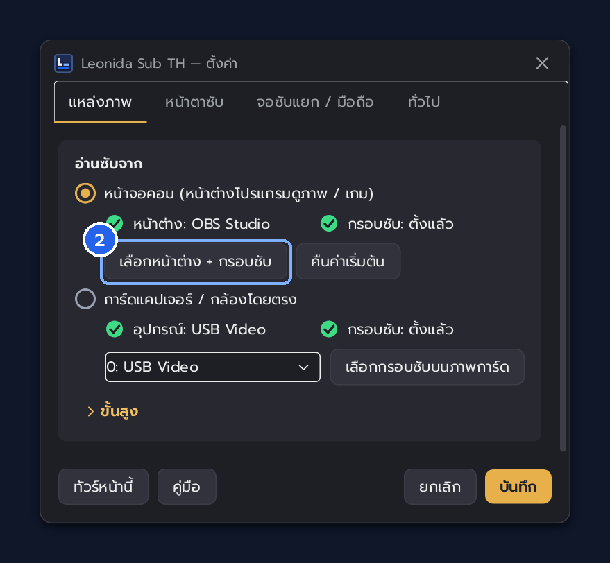
- 1ตั้งค่า › แหล่งภาพ › เลือกหน้าต่าง + กรอบซับ — ทำแบบเดียวกับ F2 ส่วน คืนค่าเริ่มต้น คืนกรอบซับเป็นกลางล่างภาพ
- 2การ์ดแคปเจอร์ / กล้องโดยตรง — อ่านภาพจากการ์ดโดยไม่ต้องเปิด OBS เลือกอุปกรณ์ในรายการ แล้วกด เลือกกรอบซับบนภาพการ์ด (ต้องเลือกก่อนกดบันทึก) ถ้าไม่มีภาพ ให้ปิดโปรแกรมอื่นที่ใช้การ์ดอยู่
ซับยังไม่ขึ้นทั้งที่เห็นซับอังกฤษบนจอ?
- ลองติ๊ก ขั้นสูง › โหมดเข้ากันได้ ในแท็บเดียวกัน (ข้อเสีย: ถ้ามีหน้าต่างอื่นทับกรอบซับ โปรแกรมจะอ่านหน้าต่างนั้นด้วย)
03วิธีต่อเครื่อง
ภาพเกมต้องขึ้นบนจอคอมก่อน โปรแกรมจึงอ่านซับได้ ทำได้ 2 แบบ: การ์ดแคปเจอร์ + OBS หรือ PS Remote Play
04ขนาดตัวอักษร
อยู่ที่ ตั้งค่า › หน้าตาซับ กลุ่ม ซับไทย
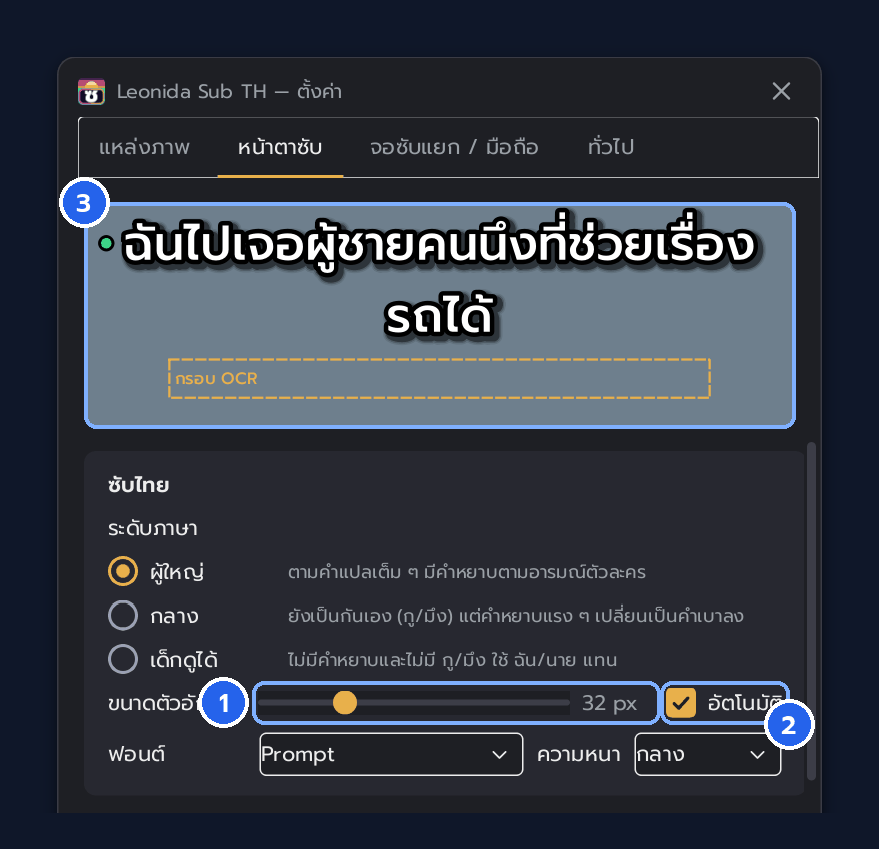
- 1ขนาดตัวอักษร — เลื่อนแถบเพื่อเลือกขนาด (px)
- 2อัตโนมัติ — ปรับตามความสูงภาพ (1080p = 32 px, 720p = 22 px)
- 3ตัวอย่าง — ดูผลทันที กด บันทึก เพื่อใช้จริง
ระหว่างเล่น
- กด F4 เพิ่มขนาดซับบนจอเกมทีละขั้น (28 → 34 → 40 → 48 → 56 px) ถึงขั้นใหญ่สุดแล้ววนกลับเล็กสุด และปิดขนาดอัตโนมัติ
05ฟอนต์ สี ขอบ กล่องดำ
อยู่ที่ ตั้งค่า › หน้าตาซับ ตัวอย่างด้านบนเปลี่ยนตามทันที
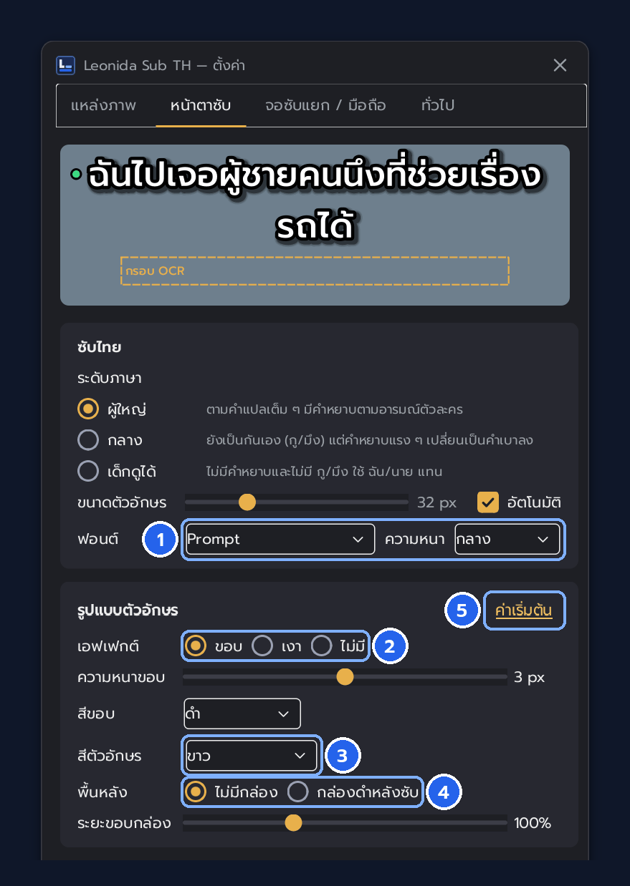
- 1ฟอนต์ + ความหนา — เลือกฟอนต์ภาษาไทยและความหนาตัวอักษร
- 2เอฟเฟกต์ — ขอบ / เงา / ไม่มี ปรับความหนาขอบและสีขอบได้ในแถวถัดไป
- 3สีตัวอักษร — เลือกจากรายการ หรือ “กำหนดเอง…”
- 4พื้นหลัง — กล่องดำหลังซับ ช่วยให้อ่านง่ายบนฉากสว่าง ปรับระยะขอบกล่องได้
- 5ค่าเริ่มต้น — คืนเอฟเฟกต์ ขอบ เงา สี และกล่องดำเป็นค่าเดิมในคลิกเดียว (มีผลเมื่อกดบันทึก)
06ระดับภาษา
เลือกความหยาบของซับไทยได้ 3 ระดับ เหมาะกับการสตรีมหรือเล่นกับครอบครัว อยู่ที่ ตั้งค่า › หน้าตาซับ › ซับไทย
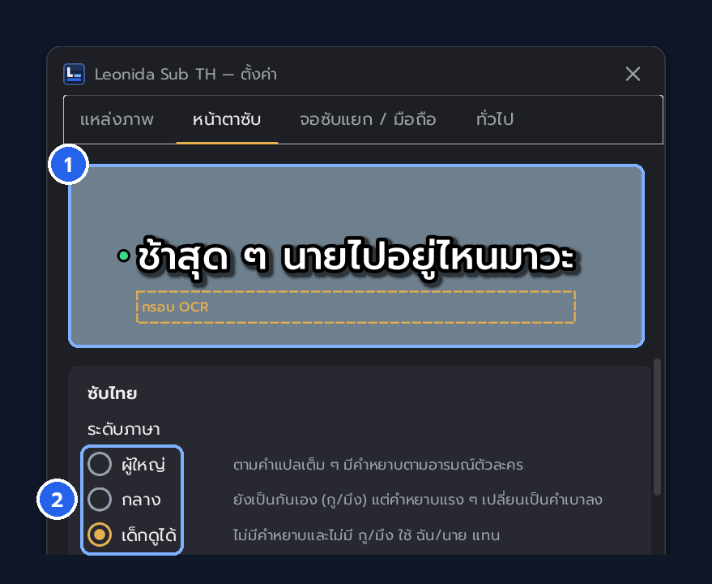
- 1ตัวอย่าง — เปลี่ยนระดับแล้วดูผลได้ทันที
- 2ผู้ใหญ่ / กลาง / เด็กดูได้ — ผู้ใหญ่ = คำแปลเต็ม · กลาง = ยังเป็นกันเองแต่คำหยาบแรง ๆ เบาลง · เด็กดูได้ = ไม่มีคำหยาบและไม่มี กู/มึง
สลับเร็ว
- หน้าหลักมีช่อง ระดับภาษา เปลี่ยนแล้วซับเปลี่ยนทันที
07ตำแหน่งซับ
อยู่ที่ ตั้งค่า › หน้าตาซับ กลุ่ม ตำแหน่ง
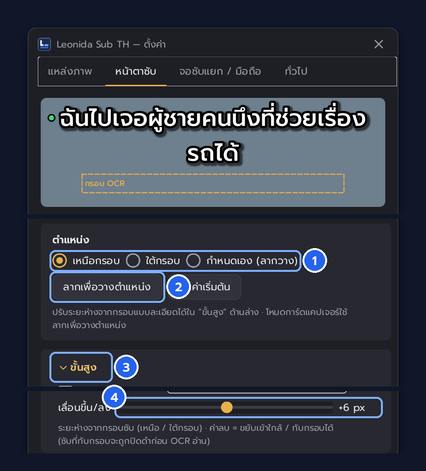
- 1เหนือกรอบ / ใต้กรอบ / กำหนดเอง (ลากวาง) — วางซับไทยเทียบกับกรอบซับอังกฤษ
- 2ลากเพื่อวางตำแหน่ง — ลากซับไปวางตรงที่ชอบ (หรือกด ปรับตำแหน่ง ในหน้าหลัก) · คืนค่าเริ่มต้น คืนตำแหน่ง/ขนาด/ฟอนต์
- 3ขั้นสูง — กดเพื่อเปิดตัวเลือกเพิ่มเติม
- 4เลื่อนขึ้น/ลง — ระยะห่างจากกรอบซับ ค่าลบ = ขยับเข้าใกล้หรือทับกรอบได้
08ประโยคก่อนหน้า
ตัวละครพูดรัวก็ยังอ่านทัน: ประโยคที่เพิ่งผ่านไปจะค้างอยู่ตัวเล็กและจางลง
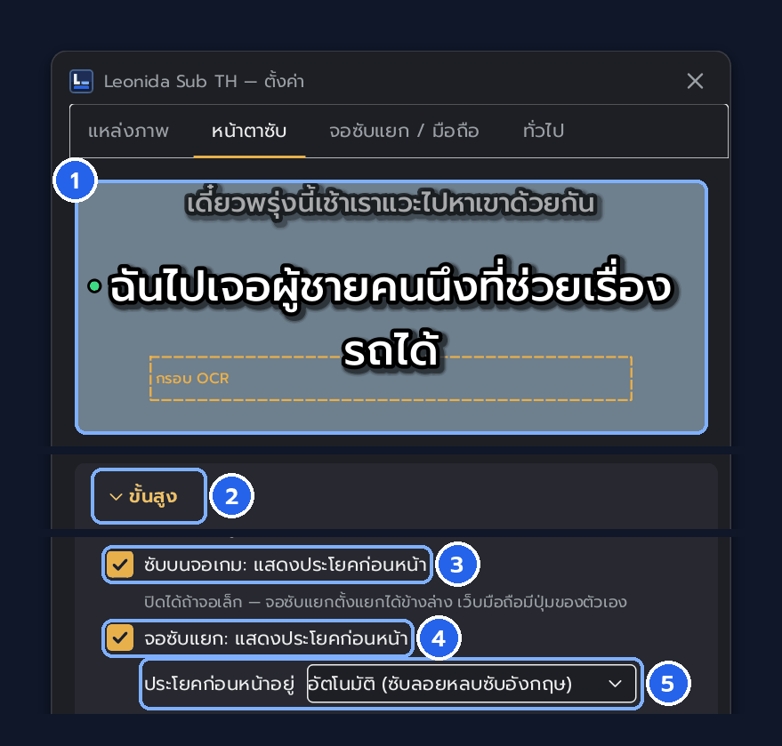
- 1ตัวอย่าง — ประโยคก่อนหน้าแสดงตัวเล็กเหนือซับล่าสุด
- 2ขั้นสูง — กดเปิดในแท็บ หน้าตาซับ
- 3ซับบนจอเกม: แสดงประโยคก่อนหน้า — ติ๊กเพื่อแสดง 1 ประโยค หายเองเมื่อเงียบไปราว 8 วินาที (ปิดได้ถ้าจอเล็ก)
- 4ประโยคก่อนหน้าอยู่ — อัตโนมัติ / เหนือซับล่าสุด / ใต้ซับล่าสุด
ข้อควรรู้
- ช่องติ๊กนี้ใช้กับ ซับบนจอเกมเท่านั้น
- จอซับแยกแสดงประโยคก่อนหน้าเสมอ และเว็บซับบนมือถือเลื่อนย้อนดูได้ทั้งหมด
09จอซับแยก + OBS
หน้าต่างซับพื้นเขียว/ดำ สำหรับใส่ใน OBS ตอนสตรีม หรือเปิดบนจอที่สอง กด F5 หรือปุ่ม จอซับแยก ในหน้าหลัก ตั้งค่าอยู่ที่ ตั้งค่า › จอซับแยก / มือถือ
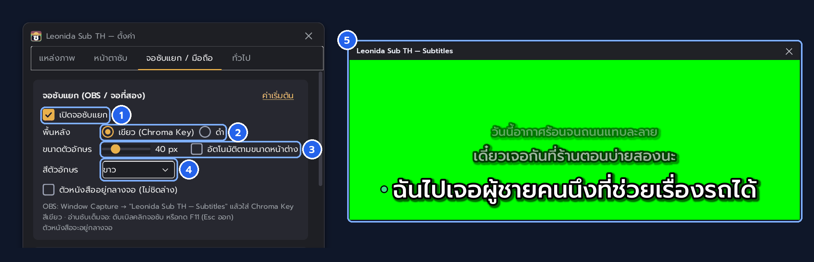
- 1เปิดจอซับแยก
- 2พื้นหลัง — เขียว (Chroma Key) สำหรับ OBS หรือ ดำ
- 3ขนาดตัวอักษร — เอาติ๊ก อัตโนมัติตามขนาดหน้าต่าง ออก แล้วเลื่อนแถบตั้งขนาดเอง (ยาวเกินจะขึ้นบรรทัดใหม่ให้พอดีหน้าต่าง)
- 4สีตัวอักษร — ตั้งแยกจากซับบนจอเกม (สีที่ใกล้สีเขียวจะใช้สีขาวแทนตอนพื้นเขียว)
- 5หน้าต่าง “Leonida Sub TH — Subtitles” — ใน OBS เพิ่ม Window Capture เลือกหน้าต่างนี้ แล้วใส่ฟิลเตอร์ Chroma Key สีเขียว
เคล็ดลับ
- ดับเบิลคลิกจอซับ หรือกด F11 เพื่อดูเต็มจอ (Esc ออก)
- ดูซับที่จอแยกอย่างเดียว: ติ๊ก ซ่อนซับบนจอเกมเมื่อเปิดจอซับแยก ในหน้าหลัก
- มีปุ่ม ค่าเริ่มต้น คืนขนาดและสีของจอซับแยก
10สตรีมผ่าน OBS พร้อมซับไทย
ให้คนดูสตรีมเห็นซับไทยด้วย ทำได้ 2 แบบ: ใส่จอซับแยกเป็นซอร์สใน OBS (แนะนำ — ซับคมชัด วางตรงไหนก็ได้) หรือจับภาพทั้งจอที่มีซับลอยอยู่
แนะนำแบบที่ 1: ใช้จอซับแยกเป็นซอร์ส
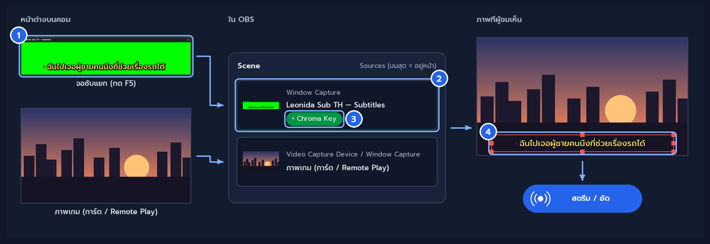
- 1เปิดจอซับแยก — กด F5 (หรือปุ่ม จอซับแยก ในหน้าหลัก) จะได้หน้าต่าง “Leonida Sub TH — Subtitles”
- 2เพิ่มซอร์สใน OBS — ช่อง Sources กด + → Window Capture แล้วเลือกหน้าต่าง Leonida Sub TH — Subtitles ให้ซอร์สนี้อยู่เหนือซอร์สภาพเกม (บนสุด = อยู่หน้า)
- 3ใส่ฟิลเตอร์ Chroma Key — คลิกขวาซอร์ส → Filters → + → Chroma Key (Key Color Type: Green) พื้นเขียวจะหายเหลือแต่ตัวหนังสือ ถ้าเลือกพื้นดำ ใช้ Luma Key หรือ Color Key สีดำแทน
- 4วางทับภาพเกม — ลากซอร์สไปวางตรงที่ต้องการ แล้วลากมุมกรอบเพื่อปรับขนาด
ตั้งหน้าตาซับสำหรับสตรีม
อยู่ที่ ตั้งค่า › จอซับแยก / มือถือ ตั้งแยกจากซับบนจอเกม
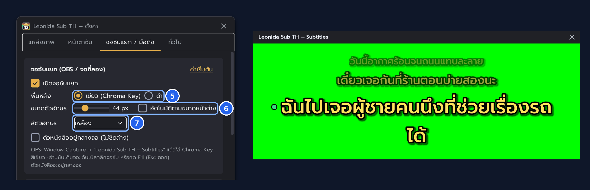
- 5พื้นหลัง — เขียว (Chroma Key) ใช้กับ Chroma Key · ดำ ใช้กับ Luma Key / Color Key แต่ขอบตัวอักษรสีดำจะโดนลบไปด้วย จึงแนะนำพื้นเขียว
- 6ขนาดตัวอักษร — เอาติ๊ก อัตโนมัติตามขนาดหน้าต่าง ออก แล้วเลื่อนแถบตั้งขนาดเอง ซับในสตรีมจะขนาดคงที่ (ยาวเกินจะขึ้นบรรทัดใหม่หรือย่อลงให้พอดีหน้าต่าง)
- 7สีตัวอักษร — เลือกสีที่อ่านง่ายบนภาพเกม (สีที่ใกล้สีเขียวจะใช้สีขาวแทนตอนพื้นเขียว)
เคล็ดลับตอนสตรีม
- ซ่อนซับลอยบนจอเกม (ไม่บังคับ): ติ๊ก ซ่อนซับบนจอเกมเมื่อเปิดจอซับแยก ในหน้าหลัก — คนเล่นดูซับที่จอซับแยก (เช่นวางไว้จอที่สอง) หรือบนมือถือ ส่วนคนดูเห็นซับในสตรีม
- ถ้าซอร์สภาพเกมใน OBS เป็น Display Capture (จับทั้งจอ) ซับลอยจะติดไปด้วยจนซับซ้อนกัน 2 ชุด: ติ๊ก ซ่อนซับจากการแชร์จอ / สตรีม (ตั้งค่า › หน้าตาซับ › ขั้นสูง) คนเล่นยังเห็นซับลอย แต่ไม่ติดไปในสตรีม
- กล่องดำหลังซับ (ตั้งค่า › หน้าตาซับ) ใช้กับจอซับแยกด้วย แต่บนพื้นเขียวกล่องจะเป็นสีเขียวเข้มที่ Chroma Key ลบได้ไม่เรียบ และบนพื้นดำจะกลืนไปกับพื้น — ลองดูผลใน OBS ก่อน หรือใช้ขอบตัวอักษรหนาขึ้นแทน
- สตรีมที่ต้องเลี่ยงคำหยาบ: ตั้ง ระดับภาษา เป็น กลาง หรือ เด็กดูได้ ในหน้าหลัก มีผลกับจอซับแยกด้วย
- อย่าย่อ (minimize) จอซับแยก ไม่อย่างนั้น OBS จะจับภาพไม่ได้ ย้ายไปไว้จอที่สองหรือมุมจอแทน
แบบที่ 2: จับภาพทั้งจอ
ง่ายสุด ไม่ต้องตั้งอะไรเพิ่ม ซับในสตรีมจะเหมือนซับลอยที่เห็นบนจอทุกอย่าง
- 1เพิ่มซอร์ส — ใน OBS กด + → Display Capture แล้วเลือกจอที่มีภาพเกมและซับลอย
- 2ต้องไม่ติ๊ก ซ่อนซับจากการแชร์จอ / สตรีม — อยู่ที่ ตั้งค่า › หน้าตาซับ › ขั้นสูง ค่าเริ่มต้นคือไม่ติ๊ก ถ้าติ๊กไว้ ซับลอยจะไม่ติดไปในภาพที่ OBS จับ
- 3ให้ซับลอยขึ้นบนจอ — อย่าติ๊ก ซ่อนซับบนจอเกมเมื่อเปิดจอซับแยก ตอนเปิดจอซับแยกอยู่
- Window Capture หรือ Game Capture ของหน้าต่างเกมจะไม่ติดซับลอย เพราะซับลอยเป็นหน้าต่างแยกที่ลอยอยู่ด้านบน — ใช้ Display Capture หรือแบบที่ 1
11มือถือ / iPad
ดูซับไทยบน iPhone, iPad หรือ Android ผ่านเว็บ ไม่ต้องติดตั้งแอปเพิ่ม
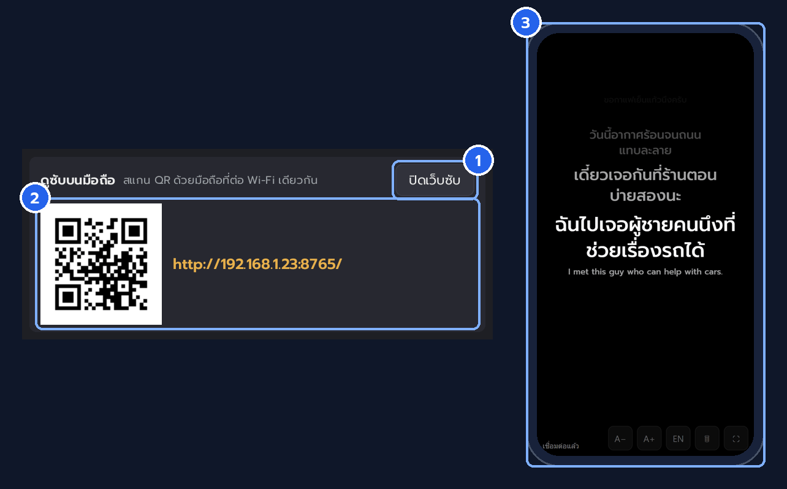
- 1ต่อ Wi-Fi เดียวกับคอม แล้วกด เปิดเว็บซับ + QR ในหน้าหลัก (หรือ ตั้งค่า › จอซับแยก / มือถือ › เปิดเว็บซับ) ครั้งแรก Windows จะถามเรื่อง Firewall ให้กด อนุญาต (Allow) สำหรับเครือข่ายส่วนตัว
- 2สแกน QR ด้วยกล้องมือถือแล้วแตะลิงก์ หรือพิมพ์ที่อยู่ที่โปรแกรมแสดงใน Safari / Chrome
- 3หน้าเว็บซับ — ซับล่าสุดตัวใหญ่ตรงกลาง เลื่อนนิ้วย้อนดูประโยคก่อน ๆ ได้ มุมล่างมีปุ่ม A− A+ (ขนาด) · EN (ซับอังกฤษ) · ล้างซับ · เต็มจอ
เคล็ดลับสำหรับ iPad
- ตั้ง ล็อกอัตโนมัติ เป็น “ไม่ใช้” จอจะได้ไม่ดับ
- ใน Safari กด เพิ่มไปยังหน้าจอโฮม เปิดได้เร็วขึ้น
- ดูซับที่มือถืออย่างเดียว: เอาติ๊ก แสดงซับบนจอเกมด้วย ออก (ตั้งค่า › จอซับแยก / มือถือ)
เปิดไม่ขึ้น?
- เช็คว่ามือถือกับคอมอยู่ Wi-Fi วงเดียวกัน (ไม่ใช่ Guest Wi-Fi)
- เช็คว่ากดอนุญาต Firewall แล้ว
- ถ้าที่อยู่ IP ของคอมเปลี่ยน ให้สแกน QR ใหม่
12คีย์ลัด
กดได้แม้กำลังเล่นเกมอยู่
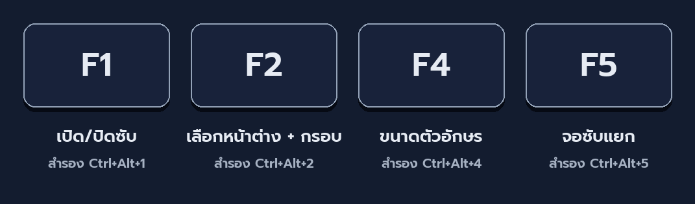
- F1เปิด/ปิดซับ — หยุดทุกที่ ทั้งจอเกม จอซับแยก และเว็บซับ กดอีกทีเปิดคืน
- F2เลือกหน้าต่าง + กรอบซับ — ตั้งใหม่เมื่อซับไม่ขึ้นหรือย้ายหน้าจอ
- F4ขนาดตัวอักษร — เพิ่มทีละขั้น ครบแล้ววนกลับเล็กสุด
- F5จอซับแยก — เปิด/ปิดหน้าต่างซับสำหรับ OBS
ปุ่มชนกับโปรแกรมอื่น?
- ถ้าปุ่ม F ถูกโปรแกรมอื่นจองไว้ โปรแกรมจะใช้ Ctrl+Alt+ตัวเลข แทนให้เอง (เช่น F1 → Ctrl+Alt+1) และบอกไว้ในหน้าหลัก
13รายงานแปลหลุด / แจ้งปัญหา
ประโยคที่ยังไม่มีในคลังจะแปลด่วนให้ก่อน (จุดสีเทา) ส่งให้เราแปลเพิ่มได้ในคลิกเดียว
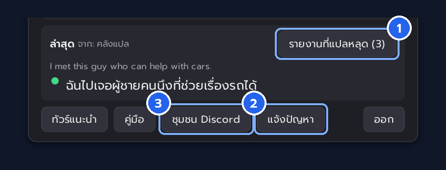
- 1รายงานที่แปลหลุด (n) — ตัวเลขคือจำนวนประโยคที่ยังไม่ได้ส่ง กดแล้วใส่ชื่อเล่น/หมายเหตุ (ไม่ใส่ก็ได้) แล้วกด ส่ง ประโยคที่ส่งมาจะถูกแปลเพิ่มเข้าคลังในรอบถัดไป
- 2แจ้งปัญหา — เล่าปัญหาที่เจอ แนบ log และภาพกรอบซับล่าสุดได้
- 3ชุมชน Discord — ถามวิธีใช้ ดูประกาศ และคุยกับคนเล่นด้วยกัน
15อัปเดต + มีอะไรใหม่
คลังคำแปลอัปเดตเองทุกครั้งที่เปิดโปรแกรม ส่วนตัวโปรแกรมจะแจ้งเมื่อมีเวอร์ชันใหม่
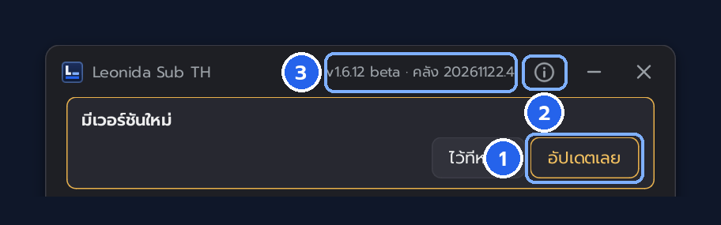
- 1อัปเดตเลย — ติดตั้งเวอร์ชันใหม่ให้เอง (กด ไว้ทีหลัง เพื่อข้ามไปก่อน)
- 2ปุ่ม (i) มีอะไรใหม่ — ดูว่าแต่ละเวอร์ชันเปลี่ยนอะไรบ้าง
- 3เลขเวอร์ชัน — เวอร์ชันโปรแกรมและเวอร์ชันคลังที่ใช้อยู่
สำคัญ
- คำแปลใหม่ส่งถึงเฉพาะเวอร์ชัน 1.6.9 ขึ้นไป — ถ้าเป็นเวอร์ชันเก่า กด อัปเดตเลย
- อยากให้อัปเดตเองโดยไม่ถาม: ติ๊ก อัปเดตโปรแกรมอัตโนมัติ ที่ ตั้งค่า › ทั่วไป